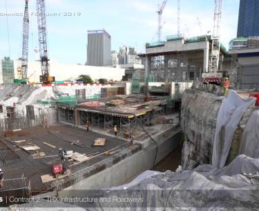
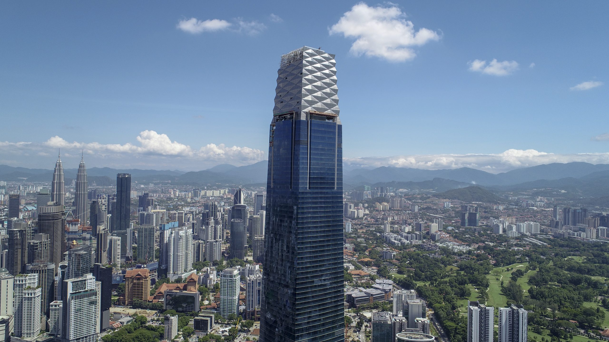

TRX City Sdn Bhd was established under the Ministry of Finance to spearhead the development of a dedicated financial and business district, setting the groundwork for Kuala Lumpur's future economic hub.
Master planning is finalized and initial ground-breaking commences. The focus is placed heavily on integrating smart city frameworks and sustainable ESG parameters from day one.

Major infrastructural milestones are achieved, including the completion of foundational road networks, deep tunneling, and the topping out of initial anchor corporate towers.
The district opens its doors to the public and global corporations. The Exchange TRX retail hub is launched, solidifying the 70-acre development as the new social and financial heart of Malaysia.
